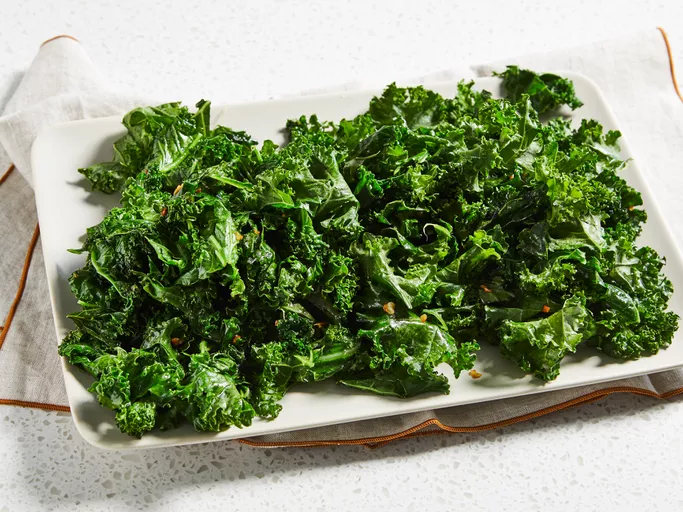

Slaw Recipe :

Description
This easy guacamole recipe is quick and simple to make. Great with tortilla chips or as a topping for Mexican foods!
- 1 bunch kale
- 1 tablespoon olive oil
- 1 teaspoon minced garlic
Steps :-
- Soak kale leaves in a large bowl of water until dirt and sand begin to fall to the bottom, about 2 minutes. Lift kale from the bowl without drying the leaves and immediately remove and discard stems. Chop the kale leaves into 1-inch pieces.
- Heat olive oil in a large skillet over medium heat; cook and stir garlic until sizzling, about 1 minute. Add kale to the skillet and place a cover over the top.
- Cook, stirring occasionally with tongs, until kale is bright green and slightly tender, 5 to 7 minutes.
Return to main page